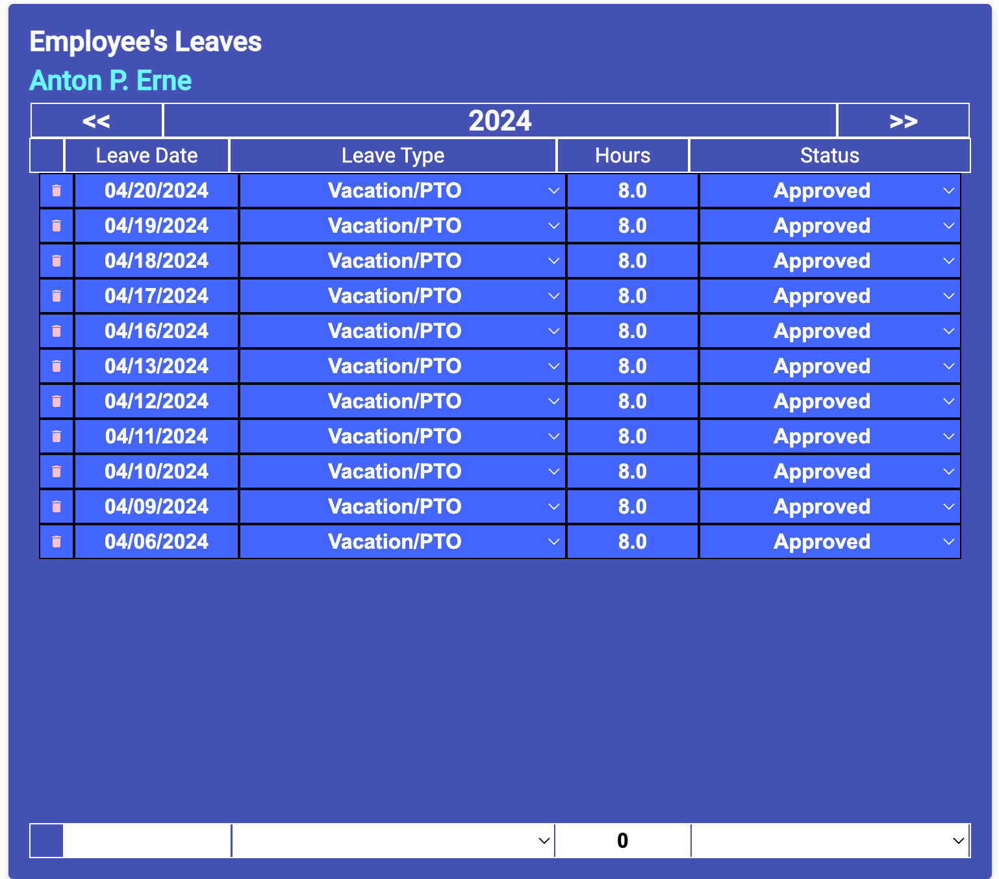

Employee's Leave Editor
(Site Scheduler/Leadership only)
This display/editor will display all the employee's leave (taken or approved)
for a single calendar year.

-
Adjust the Displayed Calendar Year
-
Click the "<<" button to adjust the viewing calendar backward
one year.
-
Click the ">>" button to adjust the viewing calendar forward
one year.
-
Edit a Leave Day
-
Find the date you want to edit. All four fields can be editted unless
the leave status is already actual. Actual leaves are either previously
so marked or were verified by ingest data. All updated fields will be
saved upon exit from the field.
-
If Leave Date is to be edited - The leave date must be in the form
MM/DD/YYYY to be saved.
-
If you want to change the Leave Type - A list of available leave codes,
select the new leave code from the list provided.
-
If you want to change the Leave's Hours - The hours are in decimal
hour format and must contain a minimum of one digit to the right of
the decimal place.
-
If you are changingin the Leave's Status - The leave status can be
one of three values (Requested, Approved or Actual). Select one of
these from the list provided.
-
Add a Leave Day - At the bottom of the display four input fields are
present to all the new leave. All four fields must be entered before you
will be able to add it to the employee's leave list.
-
The leave date must be in the format "MM/DD/YYYY". Type in the new
leave date.
-
Select the leave code to be used from the list provided.
-
Type in the number of hours for the leave in decimal hour format with
a minimum of one digit to the right of the decimal point.
-
Select one of the three values (Requested, Approved, or Actual) for
the leave status.
-
After all four values are entered or selected, a "+" sign will be
visible on the left of the entry fields. Click the "+" sign to add
the new leave. It will be added to the list of leaves.
-
Delete a Leave Day
-
Find the leave you need to delete.
-
Click the delete button to the left of the leave you want to delete.
A verification dialog will be displayed to verify the deletion. Click
the "Yes" or "No" button to verify the deletion or cancel the deletion.
Updating Employee Variations
Editing Employee's Leaves